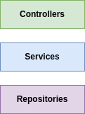
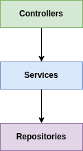
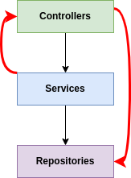

Describing the term software architecture is really a difficult task. We can find several definitions that talk about architectural components, relationships, definitions of organization , distrivuted systems and various other things that talk about how to organize the system to maintain a high level of maintainability.
At the beginning of the development of a system, in general, there is an architecture specification step in order to establish the main components, their interactions and how they will work together to meet the requirements and respect certain constraints.
These components that make up the architecture can be internal layers that were designed with the aim of organizing the code and maintaining maintainability over time. For example, imagine a web system for scheduling medical appointments and that, internally, was organized using layers. A presentation layer (Controllers) responsible for controlling the flow of requests, a service layer (Services) responsible for executing the business logic and a layer called Repositories responsible for accessing data. The layers of this system can be seen in the figure below.
Note that so far, only layers and their responsibilities have been designed. The next step is to design the interactions between these layers. In the case of the appointment scheduling system, the upper layers make calls to the lower layers. That is, the Controllers layer makes calls to the Services layer and the Services layer makes calls to the Repositories layer. Note that these dependencies are represented by the arrows between the layers in the following image.
As stated earlier, designing architecture is about establishing architectural components and how they interact in order to meet requirements and respect constraints. These restrictions are, for example, saying that the controllers layer CANNOT make direct calls to the Repositories layer, as well as the Services layer cannot make calls to the Controllers layer. See how this can happen in the image below.
If these calls happen, (the calls that should not happen) they are characterized as Architectural Deviations since the implementation deviates from the architecture that was initially planned.
These architectural deviations end up degrading the system over time. Therefore, we need some approach that can compare the planned architecture with the implementation and reveal these architectural deviations.
In general, these approaches take as input a description of the architecture that was planned and the actual implementation and compare the two to verify that the implementation is as planned - as shown in the image below.
Generally speaking, this is how architectural conformance checking works. It is worth mentioning that the Planned Architecture is specified in a domain language, allowing this process to be fully automated.